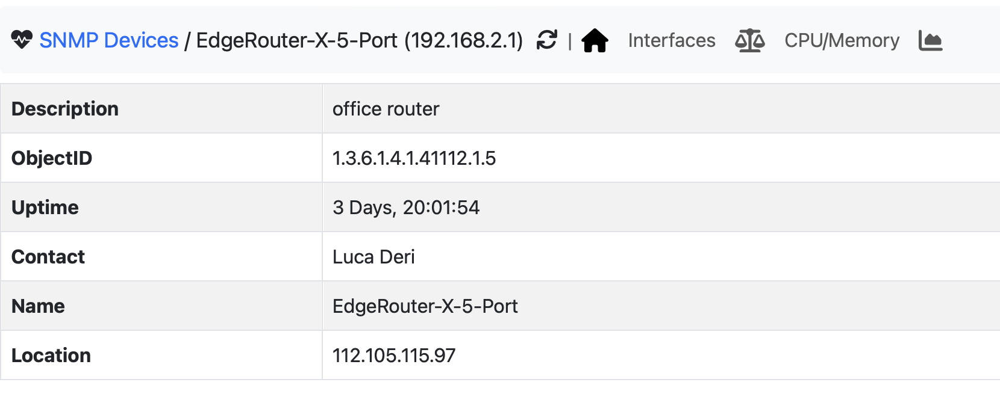
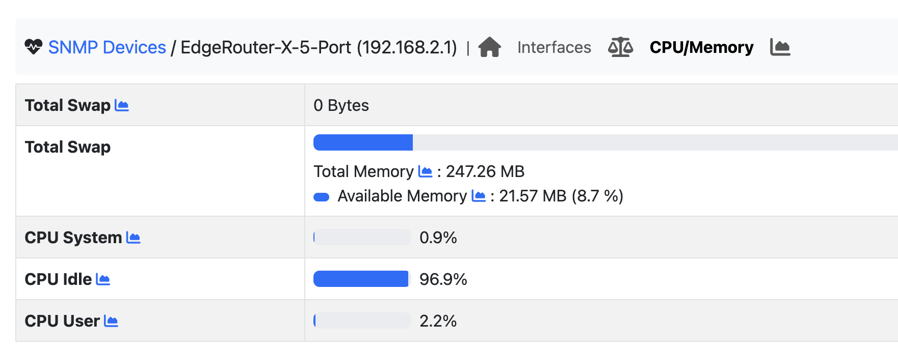
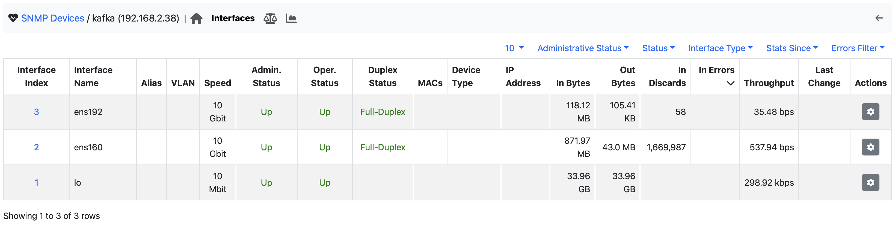
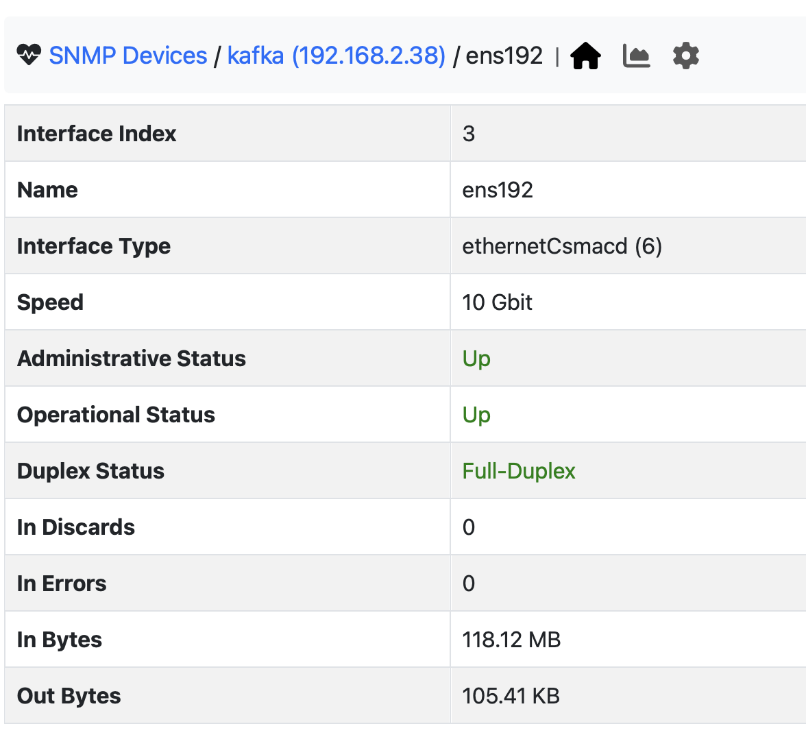
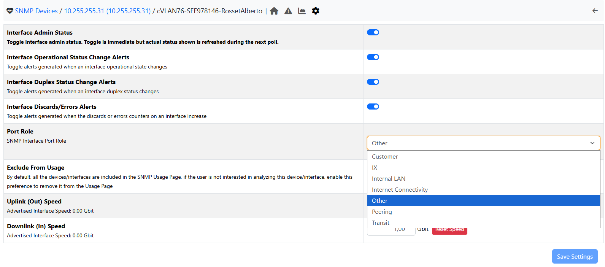
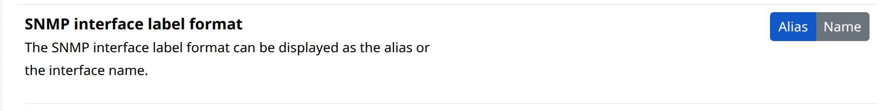
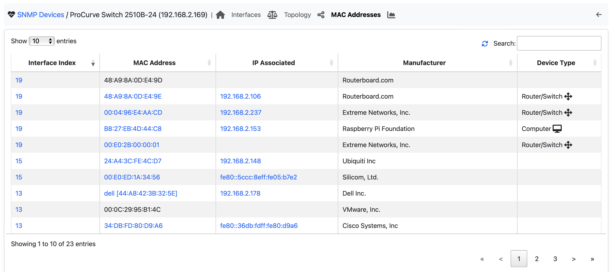
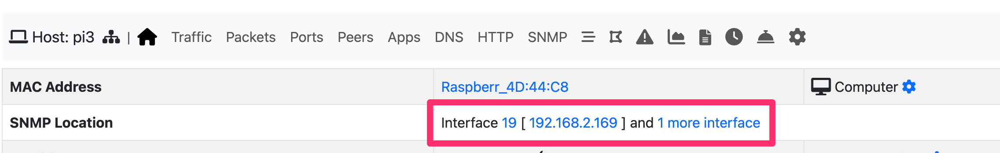

Device Monitoring
ntopng supports several MIBS including (but not limited to):
MIB-II
LLDP / CDP MIB
Bridge MIB
netSNMP
Below you can see an overview of a device:

During device discovery, ntopng automatically detectes the MIBs and in the device menu are displayed icons of those that aare available. In the picture below you can see for instance an overview of the SNMP memory and CPU usage.

Network Interfaces
One of the main uses of SNMP is monitoring of network interfaces. ntopng displays them in a table view:

Clicking on an interface id a drill-down page is shown

Interface Roles
It is possible to assign a role to a network interface that spcifies the intent for which such interface is used. Roles include:
Customer
IX
Internal LAN
Internet Connectivity
Other
Peering
Transit
You can set the individual interface role as shown in the figure below

Interface Label Format
From the preferences page it is possible to change the label format displayed for SNMP interfaces. By default, ntopng shows the interface alias, but it is also possible to display the interface name instead.
To change this setting, navigate to Preferences → SNMP → SNMP Interface Label Format.

Binding MAC Address to Interface
If present, ntopng polls the bridge MIB that is used to discover the MAC addresses observed on a network interface.

As shown above, ntopng reports the list of MAC addresses for each network interface and uses this information in network monitoring.

In the above picture you can see how SNMP is used to bind an IP address to SNMP and thus to a physical device.